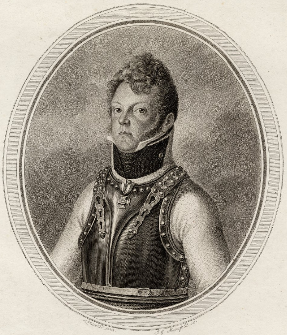
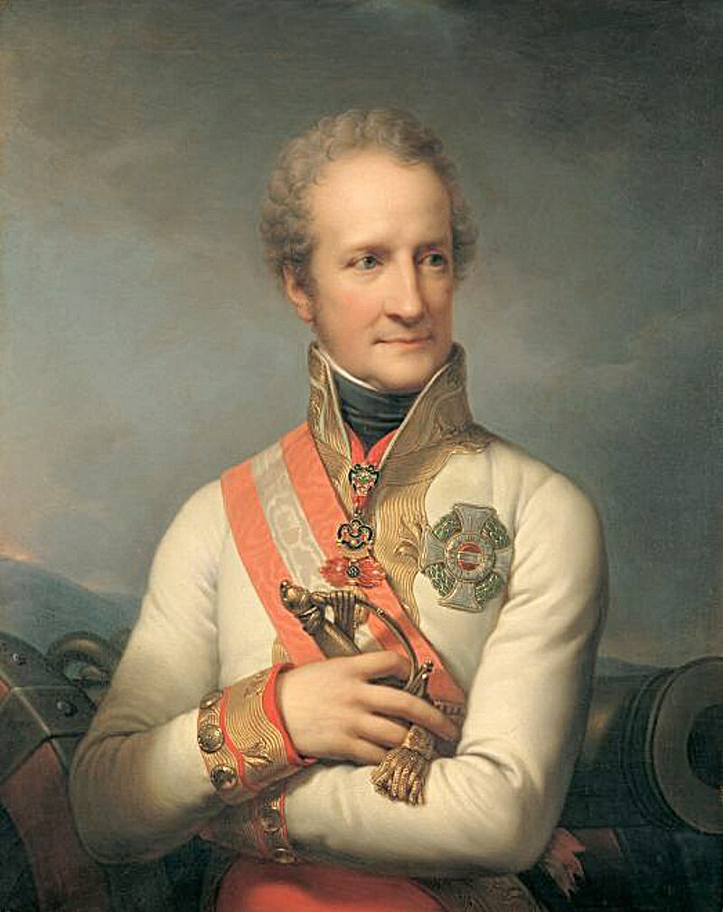
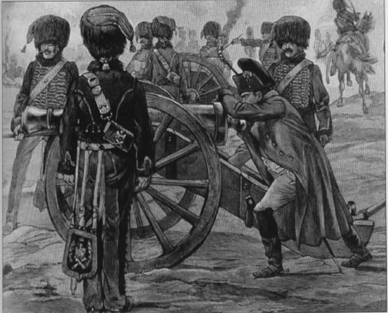
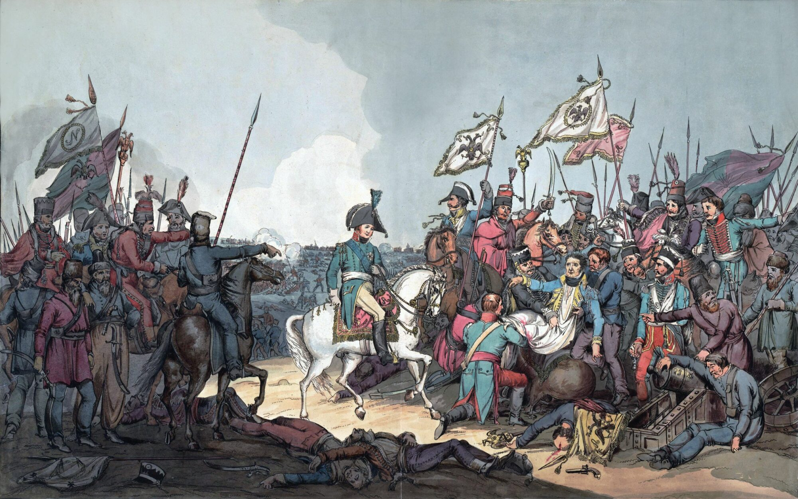
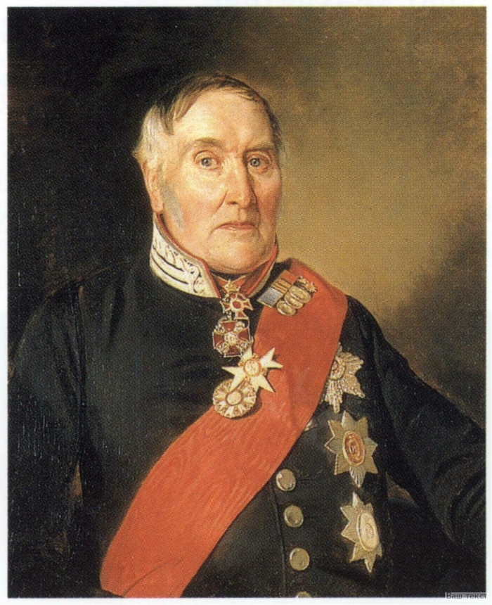
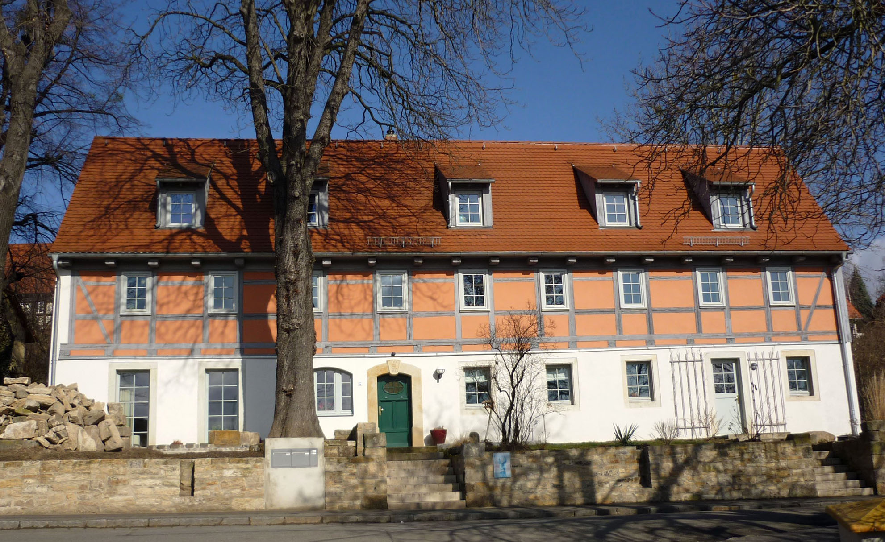
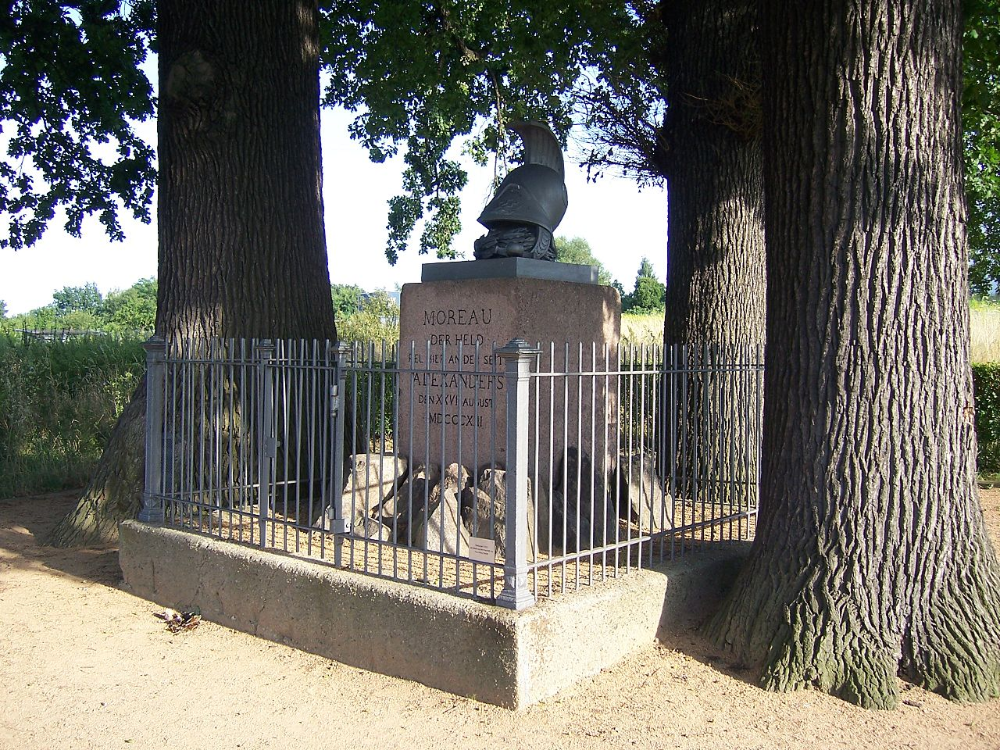

드레스덴 전투 (9) - 대포알에는 감정이 없다
게시: 2024-04-15T06:30:18+09:00
바이서리츠강 서쪽에서 프랑스군의 기병대에 오스트리아군이 학살당할 때, 오스트리아군 기병대가 뛰어나오지 못한 것엔 이유가 있었습니다. 일단, 오스트리아군은 아직 1809년 바그람 전투의 패배에서 완전히 회복하지 못하여 기병대 숫자가 많지는 않았습니다. 그나마 이 얼마 안되는 오스트리아 기병대의 주축인 리히텐슈타인(Moritz Joseph Johann Baptist von Liechtenstein)의 기병사단과 노스티츠(Johann Nepomuk von Nostitz-Rieneck)의 기병사단은 무슨 사정에서인지 상식적인 기병대의 위치인 좌익이나 우익에 있지 않고, 중앙에 배치된 오스트리아군의 뒤쪽, 그러니까 바이서리츠강의 우안에 배치되어 있었습니다.

(모리츠 폰 리히텐슈타인의 초상화입니다. 아우스테를리츠 전투 때부터 오스트리아군의 사절로 나폴레옹과 자주 접촉했던 리히텐슈타인은 이 사람의 사촌형이고, 이 모리츠 폰 리히텐슈타인은 나폴레옹보다 6살 어렸습니다. 정통 귀족 집안 도련님답게 17세에 기병대에 입대하여 쾌속 승진을 계속했고, 1800년 호헨린덴 전투의 참패를 겪고 또 1805년 울름(Ulm) 포위전에서 포로가 되기도 하는 등 승전보다는 패전이 훨씬 많았지만 그의 승진은 계속 되었습니다. 그는 1809년 바그람 전투에도 참전했는데, 거기서 가장 눈에 띄는 그의 역할은 패전 이후 카알 대공에게 사임하라고 압력을 넣은 주요 인물이었다는 것 정도입니다. 그는 용감한 군인이지만 참을성이 부족하고 화가 많은 편이었다고 합니다. 한마디로 성격이 개차반이었다는 소리지요.)

(나폴레옹도 매우 존중했던 신사였던 리히텐슈타인(Johann Josef I von Liechtenstein)의 초상화입니다. 사촌 동생의 심술궂어 보이는 초상화와 매우 대조되는 온화한 표정입니다. 사람이 나이가 40이 넘으면 자기 얼굴에 책임을 져야 한다는 것을 보여주는 사례라고 할 수 있습니다.)
어쩌면 슈바르첸베르크는 오스트리아군의 좌측, 그러니까 바이서리츠강의 좌안은 엘베강변에 바싹 붙어 있는 좁은 지역이므로 기병대가 활약하기엔 너무 좁다고 생각했었나 봅니다. 게다가 기병대의 수가 많지도 않으니 부족한 기병대를 효율적으로 활용하기 위해서, 좌익이든 우익이든 뭔가 상황이 벌어지는 쪽에 급히 투입할 수 있도록 중앙 후방에 예비대로 배치했을 수도 있습니다. 이유야 어쨌든, 밤새 내린 비로 인해 바이서리츠강이 급류가 되어버리자, 중앙 후방에 배치된 오스트리아 기병대들은 바이서리츠강에 막혀 그 서쪽에서 벌어진 전투에 투입될 수가 없었습니다. 이건 슈바르첸베르크의 큰 실책이었습니다. 한편, 원래 러시아군과 프로이센군의 기병대는 뤼첸 전투 때부터 그랑다르메에 대해 수적 우위를 계속 유지하고 있었습니다. 그랬다면, 같은 연합군이니 일부 기병대는 오스트리아군 쪽에 지원해줄 수도 있지 않았을까요? 그게 안 되었다는 것이 보헤미아 방면군의 내부 사정을 단적으로 보여주는 것입니다. 여태까지 보셨다시피, 드레스덴 전투에서 오스트리아-프로이센-러시아의 3군은 좌익부터 우익까지 국가별로 따로 배치되었는데, 그것 때문인지 아니면 원래부터 별로 사이가 좋지 못한 연합국들이라서 그랬는지 아무튼 결국 각국 군대간의 협동 작전은 제대로 이루어지지 않았던 것입니다. 그에 비해 주로 프랑스군과 작센군으로 이루어진 그랑다르메는 여러 원수들의 지휘권을 중심으로 별 문제 없이 하나의 부대로 잘 싸웠습니다. 이렇게 보헤미아 방면군의 좌우 양날개는 속절없이 꺾여 버렸는데, 이는 프랑스군 개개인의 전투 능력이 오스트리아군이나 러시아군 병사들보다 뛰어났기 때문이 아니라 그냥 양 측면에서 프랑스군의 숫자가 약간 더 많았기 때문이었습니다. 분명히 8월 27일 새벽에도 프랑스군의 숫자가 더 적었는데 어떻게 이게 가능했을까요? 한마디로 보헤미아 방면군은 중앙에 전체 병력의 2/3, 그러니까 약 12만을 집중시킨 것에 비해, 나폴레옹은 좌우 양익에 병력을 집중 배치했기 때문이었습니다. 좌우 양익에는 3만5천씩을 배치했는데, 중앙에는 약 4만 정도의 병력만 배치했고, 그 뒤에 1만 정도의 고참 근위대가 예비대로 있는 정도였습니다. 그렇다는 것은 좌우 측면에서는 프랑스군이 승리하더라도, 중앙에서는 보헤미아 방면군이 밀고 나갈 수 있다는 뜻이었습니다. 좌우 양익에서는 프랑스군이 공격으로 거세게 밀고 나갔지만, 중앙에서는 생시르와 마르몽은 무리한 공세에 나서지 않았습니다. 중앙에서 생시르와 마르몽이 시도한 몇 차례의 공격은 대부분 실패로 끝났는데, 여기엔 보헤미아 방면군의 숫자가 많기도 했지만 더 중요한 요소가 프랑스군에게 불리했기 때문이었습니다. 즉, 중앙부는 엘베강에서 멀리 떨어진 지역이라 양측면과는 달리 엘베강 건너편에서 날아오는 프랑스군의 포격이 닿지도 않는 곳이었고, 반대로 수비에 나선 보헤미아 방면군의 포병대가 이미 자리잡고 있었기 때문에 포병 전력에서 프랑스군의 우세가 이루어지지 않았던 것입니다. 나폴레옹은 아침에는 프랑스군의 좌익, 그러니까 드레스덴 동쪽에서 모르티에와 네의 공격이 잘 진행되는 것을 독려한 뒤, 이어서 오전 11시 즈음에는 중앙의 생시르 쪽으로 이동하여 전황을 파악했습니다. 병력과 포병 화력이 부족한 상태에서는 나폴레옹이 직접 오더라도 별다른 뾰족한 수가 없었습니다. 나폴레옹은 생시르를 닥달하여 로이프니츠(Leubnitz) 마을에 대해 다시 공격을 가하도록 했지만, 결국 실패로 끝나자 입맛이 떨어졌는지 오후 1시경엔 생시르의 사령부를 떠나 더 서쪽에 있는 4번 보루로 이동했습니다. 이렇게 나폴레옹은 아침부터 쏟아지는 비에 흠뻑 젖어가며 부지런히 전장을 돌아다녔는데, 이것도 나중에 생각치 못한 결과를 냅니다. 그 결과에 대해서는 나중에 보겠습니다만, 그 여정에서 묘한 운명의 장난이 일어납니다. 말을 타고 이동하던 나폴레옹은 중간에 기마포병대가 포를 방열하는 것을 목격하고, 공연히 참견을 했습니다. 아마 그 기마포병대의 지휘관과 포병들은 무한한 영광으로 생각했을 것입니다. 당시 그랑다르메의 대포에는 모두 나폴레옹의 N자가 양각으로 새겨져 있었을 정도로, 그 포병들은 자신들이 나폴레옹과 같은 병과라는 것을 매우 자랑스럽게 생각했습니다. 그런데 그 당사자이자 희대의 대영웅인 나폴레옹이 직접 자신들의 포 조준을 지휘해주다니!

(실제로 이런 상황은 거의 벌어지지 않았습니다. 나폴레옹은 바쁜 사람이었고, 대포에서 손을 뗀지 십여년은 지났을 텐데, 그 정도면 솜씨가 현역 포병보다 더 나을 것도 없었을 것입니다.)
실은 나폴레옹이라고 딱히 뭐 포 조준 솜씨가 기가 막힌 것도 아니었고, 나폴레옹이 직접 대포에 손을 댄 것도 아니었습니다. 그는 그저 저 멀리 레크니츠(Räcknitz) 마을 왼쪽에 보이는 일단의 기병대를 목표로 발포하라고 지시를 했을 뿐이었습니다. 그렇게 대포를 한 발 쏘는 것을 지켜본 뒤, 나폴레옹은 가던 길을 계속 갔습니다. 나폴레옹은 그 일이 어떤 결과를 냈는지 몰랐을 것입니다. 이 대포알이 목표로 했던 일단의 기병대는 평범한 일행이 아니라 짜르 알렉산드르와 그 수행원들이었습니다. 나름 용감한 편이라서 적 포탄이 떨어질 수도 있는 최전방 인근까지 접근하여 망원경으로 전황을 살피는 것을 좋아하던 알렉산드르는 잘 풀리지 않는 전황에 답답해하며 뭐 참견할 것이 없는지 살펴보러 나왔던 것입니다. 그를 노리고 날아든 이 무심한 대포알은 짜르와는 약간 떨어져 있던 말의 몸통 한 가운데를 정확하게 때렸습니다. 당연히 말의 몸체는 박살이 나며 피보라를 일으켰습니다. 문제는 그 말 위에 사람이 타고 있었다는 것이었습니다. 그리고 그 인물은 바로 나폴레옹의 정적, 장 모로(Jean-Victor Moreau)였습니다. 대포알은 먼저 모로의 오른쪽 다리를 박살내며 말의 몸체를 관통한 뒤 모로의 왼쪽 다리까지 부숴 놓고 어디론가 날아갔습니다.

(모로의 피격 장면입니다. 모로가 피격되었다는 것은 하마터면 알렉산드르가 그 포탄에 맞을 수도 있었다는 뜻입니다. 알렉산드르는 약간 모자란 오지라퍼이긴 해도, 결코 겁장이는 아니었습니다. 모로는 주변에 보이는 코삭 기병들의 창대로 만든 들것에 실려 후송되었습니다.)

(당시 모로의 다리 절단 수술을 집행한 제임스 와일리(Sir James Wylie) 경의 1841년 모습입니다. 나폴레옹보다 1살 많았던 그는 스코틀랜드에서 태어난 의사로서, 먼저 러시아에서 예카테리나 대제의 주치의로 있던 동향 선배 존 로저슨(John Rogerson)의 초빙으로 러시아군 군의관으로 복무했습니다. 그는 1805년부터는 짜르 알렉산드르의 수행원이 되어 아우스테를리츠 전투에도 참전했으며, 1812년 보로디노 전투에서 치명상을 입은 바그라티온을 치료한 것도 와일리였습니다. 1814년 종전 이후 알렉산드르가 영국을 방문했을 때 그를 수행한 그는 당시 영국 섭정공으로부터 기사 작위를 받아 당시 의사로서는 매우 드문 영광을 누렸습니다. 그는 1854년 85세로 사망할 때까지 러시아에서 부과 명예를 누렸습니다.)

(모로의 수술은 드레스덴 남쪽 클라인페스티츠(Kleinpestitz)에 있는 팔리츠쉬(Palitzsch)라는 학자의 저택에서 이루어졌습니다. 사진에 보이는 클라인페스티츠의 건물의 이름은 Moreauschänke (모로쉔커, 모로 주막이라는 뜻)인데, 모로를 기리기 위해 지어진 건물로서, 그 주춧돌에는 1813이라는 숫자가 새겨져 있습니다. 이 건물은 수십년간 여관으로 사용되었는데, 그 식당에는 드레스덴 전투를 묘사한 벽화가 장식되어 있다고 합니다.)

(모로가 피격된 자리를 기념하는 표석입니다. 모로의 죽음에 대해서는 https://nasica-old.tistory.com/6862505 를 참조하시기 바랍니다.) 이렇게 모로가 치명상을 입고 허무한 죽음의 길로 접어든 사이에도 전투는 계속 되었습니다. 좌우 양익에서는 프랑스군이 크게 우세했지만 중앙에서는 주로 양측의 팽팽한 포격전이 이어지며 백중세가 지속되었습니다. 그러던 중에, 남쪽에서 불길한 파발마가 도착합니다. Source : The Life of Napoleon Bonaparte, by William Milligan Sloane Napoleon and the Struggle for Germany, by Leggiere, Michael V With Napoleon's Guns by Colonel Jean-Nicolas-Auguste Noël https://fr.wikipedia.org/wiki/Moritz_von_Liechtenstein https://de.wikipedia.org/wiki/Moreau-Denkmal https://en.wikipedia.org/wiki/Sir_James_Wylie,_1st_Baronet https://de.wikipedia.org/wiki/Kleinpestitz https://en.wikipedia.org/wiki/Jean_Victor_Marie_Moreau https://www.quora.com/Napoleon-was-an-expert-at-using-a-certain-type-of-weapon-which-was-it